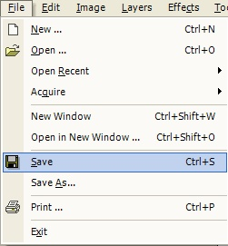

Save / Save As Operation
|
 The Save Operation (File-->Save or Disk Icon in toolbar) allows the user to save an image. Use this option to quickly save the any changes.The Save As Operation (File-->Save As) is used when saving a new image or when saving the current image to with different name. |